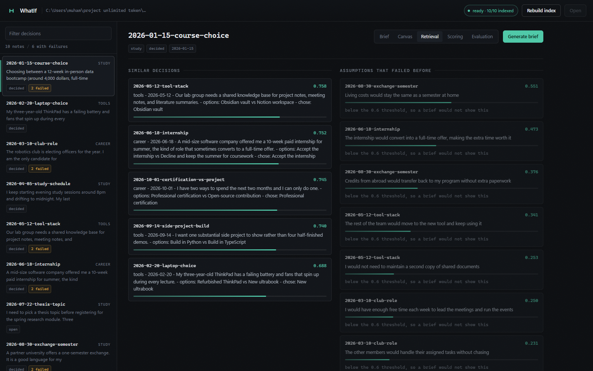

It went badly. You do not remember.
Every decision, every assumption you made, written down carefully. The one that would have helped you? You cannot find it.

The model never invents a number. Every total is calculated from the scores you wrote down.
It is not built to agree with you.